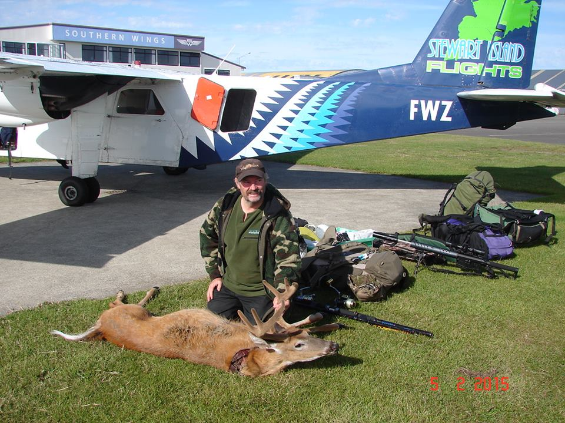
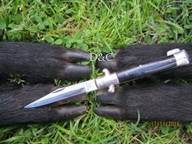

Охота и рыбалка в Новой Зеландии
 |
Охота |
 |
Охота в окрестностях Aucklanda-1-2- дня охоты. Популярная охота, среди туристов путешесвующих по Нз,а тагже родителей которые хотят показать детям настоящее приключение. Исключая трофеев можно добыть почти что всё. |
|  | Вертолетные поездки. Предлагаем охоту в частных/ общего пользования охотничьих угодьях в регионахTaupo, Kaikoura, Stewart Island. 5-7 дней. Охотничий сезон : на благородного оленя : с февраля по август, на серну охота: круглый год, на лань с марта по сентябрь, на пятнистого оленя с февраля по сентябрь, на белохвостого оленя с апреля по декабрь. |
 |
Охота на пернатую дичь (окрестности Aucklanda) Сезон открывается в свои сроки для каждого региона и вида птиц:на Северном Острове почти что традицыей стало: 1 марта — открытием сезона на Новозеландского огаря, Крякву и Серyю крякву, Австралийскую широконоску, Канадскую казарку, Чёрного лебедя, pukeko, фазана и др. Сезон может длится до конца августа, для некоторых птиц заканчивается в июне. |
|  | Охота на дикого кабана с или без собак. Экземпляры с фотогалереи были добыты без собак. |